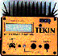
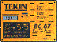
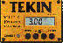
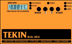
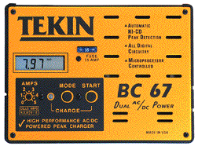
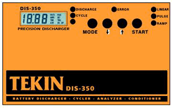

Scroll to see all the chargers or
click the links below to jump to each model.
BC 110L Linear Peak Charger |
 BC 48 Professional DC Charger |
|---|---|
|  BC 67 Professional AC/DC Charger |
 BC 112A & 112C Power-Flex Chargers |
|  DIS 350 Battery Discharger |
|





The DIS-350 may also be attached to the back of the BC112C AC/DC power charger for a complete integrated charging/discharge/test system.
Prices listed are suggested retail price.
Actual dealer prices may vary.